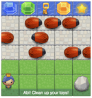
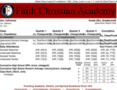
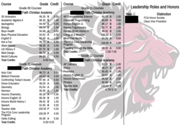

-
 Performant Pizzas
Performant Pizzas
This page is the focus of this project: optimized websites. As you can see at the bottom of this page, the load time is being tracked. When you open the Performant Pizza link, you will find a site that is bogged down with all sorts of unnecessary animations and functionality. I have optimized those features to load quickly and run at a jank-free 60fps. Enjoy!
-

No, No, Abi!
I made my own version of Frogger, with the game's "plot" being inspired by my daughter Abigail. Javascript + HTML5 Canvas is pretty cool!
-

FCA Report Card Templates
This was my first experience with HTML/CSS, and admittedly, I had no idea what I was doing. However, following the tutorial that RenWeb (our SIS) provided, I was able to design the templates in Excel and insert the proper variables at the right locations to make this simple, but pleasant-looking, report card.
-

FCA Transcript Templates
Transcripts are apparently a whole different animal. I started in on this project shortly after completing the Report Cards, but was quickly discouraged by a litany of errors that confused me terribly. With no programming background, I just decided this would have to wait. Two years later, after benefitting tremendously from Udacity's Front-End Web Development Nanodegree, I found the courage to dive back in. It took me a month of working away at it, but I couldn't possibly be happier with the results!
-
Forward Conference 2017 Landing Page
This was my first "serious" website. I used Freenom and Github pages to host it, and Bootstrap 3.3.7 as my CSS framework. I also threw in some flexbox to my styles, to aid in the mobile responsiveness. Check it out!

Ben Steward
Web Developer
I love web development! This simple portfolio showcases a few Udacity projects I've completed and some projects I put together at my last job. I love learning new things, and the world of Web Development is constantly generating new ideas and tools for me to learn and utilize. My short experience in this field has been very exciting and motivating!
Like what you see or have questions? Contact me: ronyfan102@gmail.com
Like what you see or have questions? Contact me: ronyfan102@gmail.com